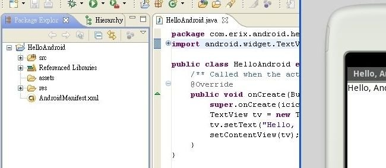

|

Aunque la última revisión importante fue la 14, donde introdujeron todo lo necesario para poder desarrollar para Android 4.0 o “Ice Cream Sandwich”, Google acaba de publicar una revisión menor de las mismas donde corrigen algunos errores e introducen nuevas funcionalidades y, como viene siendo habitual, hay que actualizar el plugin ADT a la versión 16.
Entre las nuevas funcionalidades hay una que la comunidad llevaba pidiendo desde hacía tiempo: poder emular sensores en el emulador (valga la redundancia) usando las entradas de los sensores reales del dispositivo conectado al equipo de desarrollo. También han incluido, para MacOS, que la webcam de nuestro Apple sea la entrada para la cámara del emulador. También han introducido el uso de las Lint Tools para detectar errores comunes en los proyectos Android. Entre los errores, el más destacable es que los snapshots ya funcionan con las imágenes de los nuevos Android 4.0.
Más información | SDK Tools: Android Developers